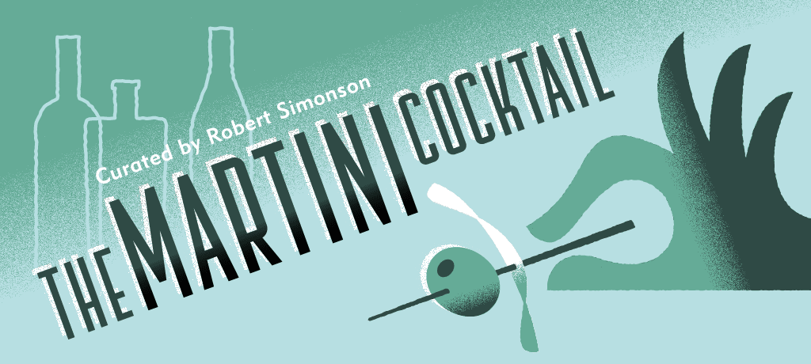
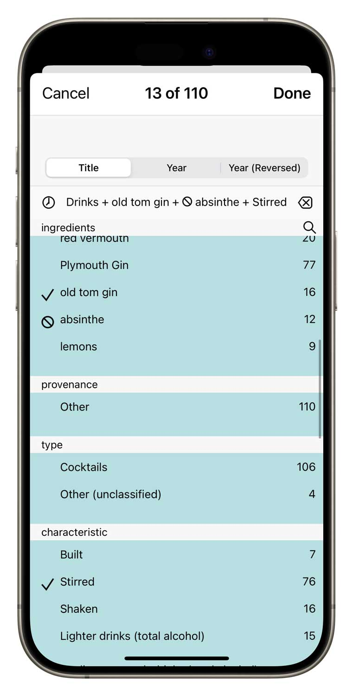
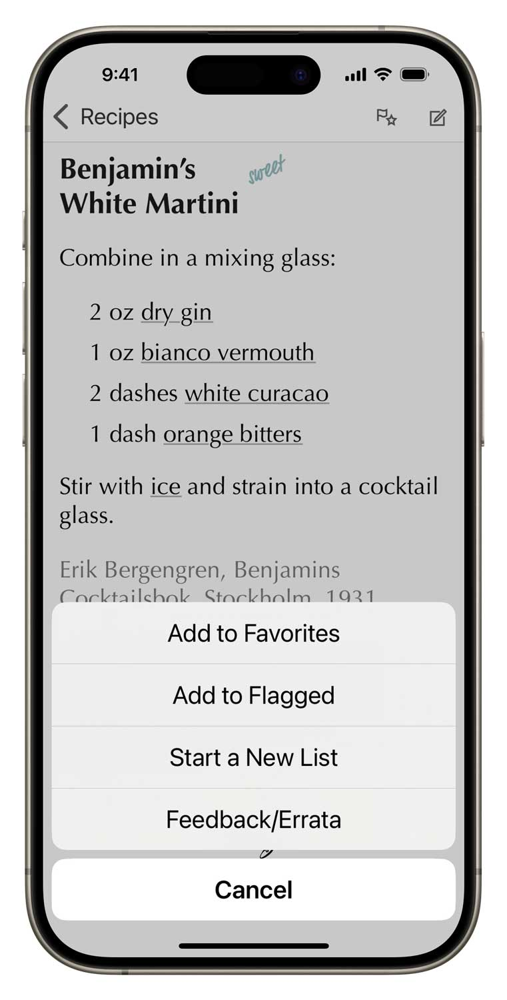

Here we focus entirely on the king of cocktails—the Martini—and explore it exhaustively. No citrus drinks. No “chocolate martinis” or nonsense of that kind. Nothing actually sweet: dry, and off-dry drinks only. Gin cocktails (73%) and vodka cocktails (13%), nearly all with vermouth or other aromatic wines.
Fundamentally good
Over 70 Dry Martinis (and close relatives) to explore, drawn from essential books, famous personalities, and institutions. Over 30 off-dry Martinis (and close relatives) to rediscover employing red vermouth, white vermouth, genever, and/or Old Tom Gin. Fully-annotated by author and journalist Robert Simonson, and the perfect companion to his book, The Martini Cocktail: A Meditation on the World’s Greatest Drink, with Recipes, available from Ten Speed Press.
Easy-to-use power
Search by name or ingredient just like in your address book. Surf through recipes and ingredients by tapping hyperlinks.
More surgical questions are just a few taps away: filter all the recipes by any combination of ingredients and keywords.
Ingredient aware
Our drink recipe apps have the smartest ingredient system. Simply check off what you have and the app will tell you which drinks you can make, including legit substitions.
Simple tools of great utility
Flag recipes you want to try, populate your favorites list, create a new list for planning the drinks for your next party. Add your own notes to any recipe.
Part of a talented family
The Martini Cocktail inter-operates with its seven sibling recipes apps that you can add at any time.

Set up your free sync account and all these apps can share your ingredient inventory, lists and journal notes. In the same manner, you can have Total Tiki on both your iPhone and iPad, and they’ll stay in sync. You can even access your sync data with a web browser.